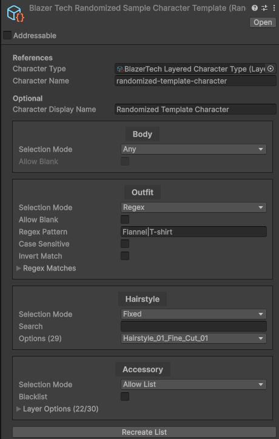
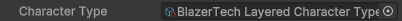
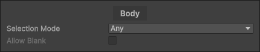
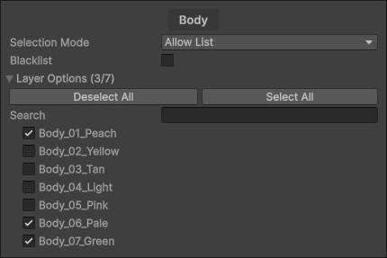
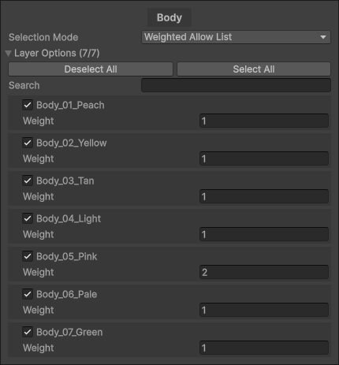
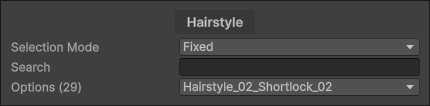

Randomized Layered Character Templates
A Randomized Layered Character Template is a Scriptable Object used to create Randomized Layered Characters at runtime.
Unlike standard Character Templates where the output is always the same result, a Randomized Character Template creates a random character each time based on a set of pre-configured rules.
When Should You Use this?
Use a Randomized Layered Character Template when:
- You need randomized NPC generation.
- You want varied background characters with set rules
- You want controlled randomness with filtering or weighting
This system gives you fine control over how each layer is selected.
Workflow Overview
- Create a Randomized Layered Character Template
- Assign a Character Type
- Set the default name
- Configure Selection Mode for each layer
- Assign the template to a Layered Character Renderer
The template can now procedurally generate controlled, reusable character variations.
Basic Setup
Create
To create a Randomized Layered Character Template right click the Project window and navigate to
Create > BlazerTech > Character Management System > Character Templates > Randomized Layered Character Template.

Character Type
Assign the Character Type asset that all characters created from this template will use.

This is used to determine:
- The available layers of the character
- The available Layer Options for each layer.
- The Animator Controller used to animate the character
Once assigned, a configurable list of layers will appear.
Default Character Name
Set the default name assigned when a character is created from this template.
You may also optionally set a Display Name for use alongside created characters in-game.

Layer Randomization Settings
When a Character Type has been assigned, a list of layers appears.
Each entry represents a layer defined in the Character Type.

Each entry has a Selection Mode which determines how a Layer Option is chosen for that layer.
Each layer can be configured independently.
Selection Mode: Any
Selects a Layer Option completely at random from all available options.
This is the default and simplest option.

Allow Blank determines if a blank Layer Option can be selected.
Note
Allow Blank can only be enabled if the layer itself supports blank options.
Best for: Fully random generation with minimal setup.
Selection Mode: Allow List
Selects randomly from a specific list of allowed Layer Options.

Pros:
- Precise control over available options
Cons:
- Can be hard to manage if Layers Options are change often.
Selection Mode: Weighted Allow List
Works like the standard Allow List with the addition of a Weight property for each Layer Option selected.

Higher weights increase the likelihood of selection.
Example: If Option A has weight 2 and Option B has weight 1, Option A is twice as likely to be selected.
Pros:
- Precise control over available options
- Adjustable probability
Cons:
- Can be hard to manage if Layers Options are added/removed often.
- Requires manual balancing
Best for: Common vs rare visual elements.
Selection Mode: Regex
Uses a Regular Expression pattern to dynamically match Layer Options by name.
Learn more about Regular Expressions here

The regex pattern filters Layer Options at runtime and randomly chooses from the list.
Example pattern: Flannel|T-shirt
This matches any Layer Option containing either “Flannel” or “T-shirt”.
The Regex Matches list shows which options currently match your pattern.
Note
matches are evaluated at runtime, not cached in the editor. The Regex Matches list is for editor visualization only.
Additional Settings
- Allow Blank — Include blank as a possible result
- Case Sensitive — Toggle case sensitivity
- Invert Match — Treat the pattern as a blacklist
Pros:
- Highly flexible
- Automatically adapts when Layer Options change
Cons:
- Steep learning curve if new to Regular Expressions
Best for: Situations where Layer Options are frequently added or removed.
Selection mode: Fixed
Always selects a specific Layer Option.

Best for: Layers that should never change.
Selection Mode: Blank
Always selects a blank Layer Option.

Note
Only available if the layer is allowed to be blank. Can be toggled in the Layer Definition Asset
Best for: Explicitly disabling a layer.
Runtime Usage
Randomized Layered Character Templates can be used in the same Layered Character Renderer component that the standard Layered Character Templates use.

This component will create a character from the template and animate it using the Animator Controller assigned in the Character Type.
Note
If Use Cache is enabled it will use the same character every time after the first character is created.
If you want to create a new randomized character each time, disable this setting.